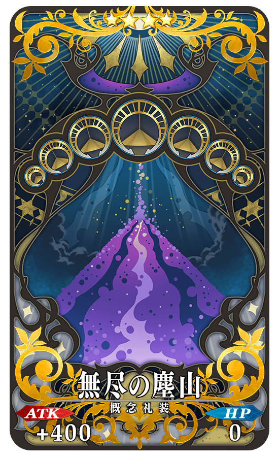

只能靠自己培育的從者來挑戰的測試用關卡「進階關卡」在迦勒底之門內常設。
「進階關卡」在滿足開放條件後無論何時都能挑戰。
可獲得特別的概念禮裝做為關卡通過報酬。
與培育的從者一起挑戰「進階關卡」，測試自己的實力吧！
關於進階關卡預定今後也會持續追加！
※請注意在進階關卡沒有文字冒險部份。 ※本頁面皆為開發中圖片。會有與實際圖片相異的情況。
◆開放關卡◆
【進階關卡】戰鬥訓練程式 三騎士篇
◆追加時間◆
2022年1月26日(三) 17:00～
※關卡沒有舉辦期限。
◆開放條件◆
・通過「第四特異點 死界魔霧都市 倫敦」
◆在進階關卡中的注意點◆
・進階關卡中無法選擇支援從者，只能靠自己的從者進行戰鬥。
・進階關卡通過一次後就無法再挑戰。
・進階關卡的戰鬥無法接關。

通過「【進階關卡】戰鬥訓練程式 三騎士篇」後，在關卡通過時可獲得提升「虛影之塵」掉落率的概念禮裝「★4(SR)無尽の塵山」。
※可於「【進階關卡】戰鬥訓練程式 三騎士篇」獲得的「★4(SR)無尽の塵山」只限1張。第2張以後有預定可在今後的措施獲得。
|  |
★★★★SR
|

下述的期間中，限有通過「第七特異點 絕對魔獸戰線 巴比倫尼亞」的御主，能獲得「虛影之塵」做為戰利品的自由關卡的初次通過前消耗AP以期間限定變成1/2！(就算在戰鬥中撤退的情況，也會是同様的消耗量)
尚未通過該自由關卡的御主玩家，請務必活用此機會！
※敬請注意期間限定活動的自由關卡為對象外。 ※初次通過是指入手初次通過報酬的時間點。
◆舉辦期間◆
2022年1月26日(三) 17:00～2月2日(三) 11:59
◆成為對象的條件◆
・通過「第七特異點 絕對魔獸戰線 巴比倫尼亞」的御主對象
◆對象關卡◆
有可獲得「虛影之塵」做為戰利品可能性的主線關卡內自由關卡